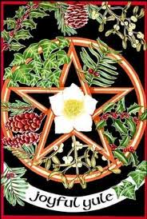
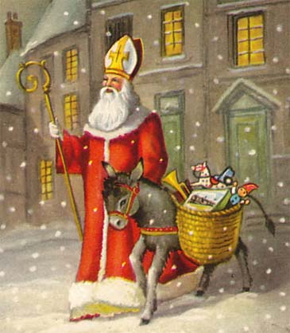

|

Yule means wheel in Old English. Here, the wheel of birth, death and rebirth is complete. Yule is the first minor Sabbat in the wheel of the year.
The nights’ darkness rules half of the year until winter Solstice, the 21st of December. This is when we celebrate the birth of the Light. In the longest and darkest night a new light is born, the divine child. The Sun enters the laborious and cheerful Capricorn.
In celtic mythology, the Oak King rules during the luminous half of the year. In Yule he conquers the Holly King so he can reign until summer. The Oak King and the Holly King are two opposed forces which are personified in Litha and Yule, and thus they complement each other. The bird that is symbolic of the Holly King is the robin, and that of the Oak King is the goldcrest.
The celebration of the winter Solstice is related with the birth of diverse heroes and gods such as Dionysus, Mithra, Perseus, Apollo, Horus... Jesus would be a part of quite a long list. It is the celebration of the Sun-God, the son of God, the divine child...
In ancient Rome the Saturnalia festival was celebrated from the 17th to the 23th of December. It was dedicated to Saturn, in which there was a winter rest from the agricultural labor. Even the slaves rested. They received extra food, and sometimes their roles and those of their masters were temporarily swapped. Saturn was equated with the pre-hellenic Cronus, a god from the golden age in which there were no social classes. In the festival there were huge feasts and gifts were exchanged among friends and relatives. Houses were decorated with plants, and feasts were held under the light of the torches to symbolize the end of the darkest period of the year and the birth of the Sol Invictus on the 25th of December.
The Church Fathers, took the decision that the birth of Jesus had to happen on these dates in order to eclipse the cult of Mithras the romans professed, and the celtic and saxon Yuletide feasts.
We can still find nowadays a pagan legacy in symbols like the “Yule log” cake, the fertility ritual under the mistletoe, holly, the lighting of candles and lights to banish the darkness, the decoration of the christmas tree...
The Yule log was a central piece of the pagan celebration. It is also said that the celts already decorated their trees to ensure the evergreenness of fruits in winter. The old Yule log was made of wood instead of chocolate, and it burned the whole night among aromatic protective herbs.
Holly, ivy and mistletoe are the sacred plants for this day. They symbolize fertility and eternal life. Pines and firs remind us of fertility even in the midst of winter, due to their perennial leaves.
In those days we also see everywhere the Poinsettia flower. The origin of its Christmas use is very interesting. This was a sacred plant for the aztecs, who used it as a medicine and as an offering to their gods. In the XVII Century, franciscan monks that were evangelizing Taxco de Alarcón started to use it as a christmas decoration. But it was Joel Roberts Poinsett, doctor and botany enthusiast from the XIX Century, who dedicated himself to grow this plant. He had the idea of gifting his family and friends this plant for christmas, and it became a tradition that has spreaded all over the world.
In the Middle Ages there were popular sayings about this time of the year: bees would buzz the 100 psalm in Christmas eve, animals would kneel, people born the 25th could see the little people ... all of them express the magic and sacredness that the solstice holds.
Another pagan element popular tradition has kept is Santa Claus. The fact that Santa Claus enters through the fireplace and not through the door isn’t random. The fireplace is a symbol of the connection between heaven and earth. Through it we receive the most valuable presents, which are those that come from heaven.
Saint Nicholas, whose day was celebrated on the 6th of December, became Santa Claus in yet another attempt from the Church towards taking over a pagan symbolism.
During this sabbat, you can decorate and light up your house or your altar; gather your loved ones and prepare your resolutions for the upcoming year. Honor the Light that is born amidst the greatest Darkness.
Incense: To make the Yule incense you’ll need two parts of frankincense (olibanum), two parts of pine tree resin, one of cedar, and one of juniper berries.
Gems: Turquoise and zircon.
Herbs: Holly, mistletoe.
Flower: Poinsettia.
Tree: Pine, fir tree, and every perennial leaf tree.
Animal: Rook, deer.
Food and drink: Yule log cake, hot drinks like tea, chocolate or coffee, and of course, hot cider.
Colors: Green, red, white and golden.

|
 RSS
RSS